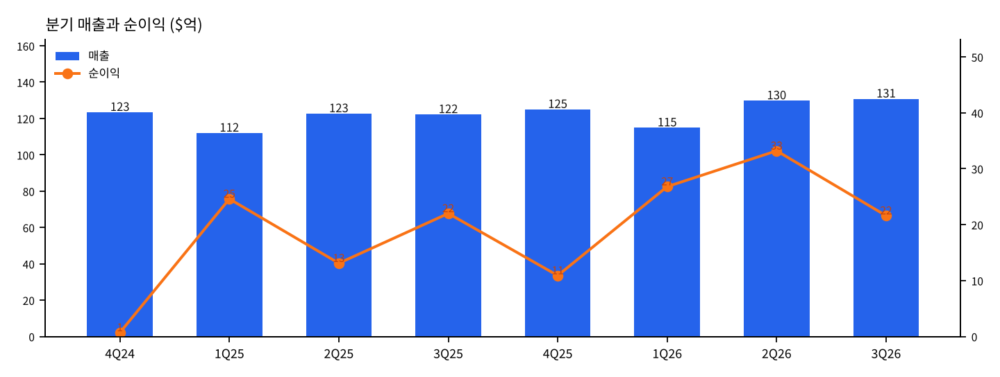
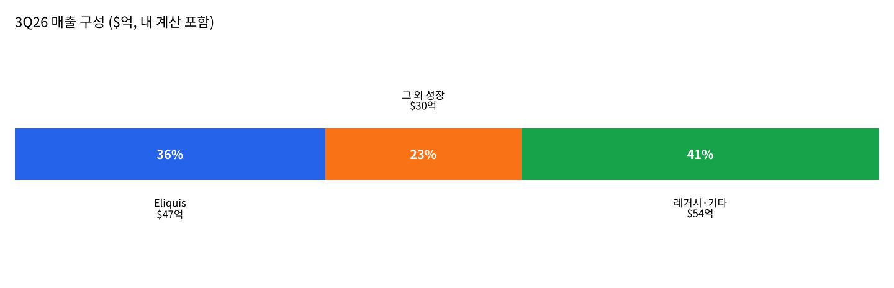
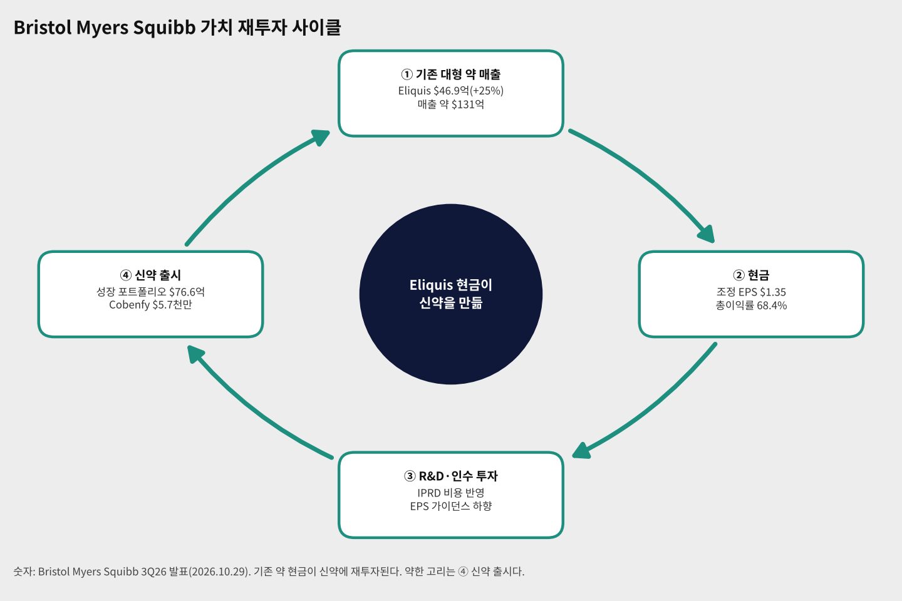

Bristol Myers Squibb는 Eliquis 같은 기존 대형 약에서 번 돈으로 신약을 개발·인수해 특허 만료 매출을 메우려 한다.
| 항목 | 내용 |
|---|---|
| 종목 | Bristol Myers Squibb (BMY) · NYSE · 제약 · 뉴저지 프린스턴 |
| 최근 분기(3Q26) | 매출 약 $131억, 조정 EPS $1.35 |
| 핵심 상품 | Eliquis, Opdivo, Revlimid, Breyanzi, Cobenfy, Camzyos |
| 직원 수 | 약 32,500명(트레이딩뷰) |
| 멀티플 | PER·PEG·P/S는 08~10 항목 표 참조 |
| 직책 | 인물 | 역할·특징 |
|---|---|---|
| 회장·CEO | 크리스 보어너(Chris Boerner) | Eliquis 이후를 메울 신약 출시와 효율화를 이끈다 |
| CFO | 데이비드 엘킨스(David Elkins) | 가이던스 상향·하향 구조를 설명 |
경영 스타일: 포트폴리오 교체. 특허 만료 약의 현금으로 신약 개발과 인수를 병행하는 방식이다.
Breyanzi(CAR-T), 신규 CELMoD 계열 등 차세대 치료제로 포트폴리오를 바꾸는 중이다.
2027년 Eliquis 매출 $15~20억 감소를 성장 포트폴리오로 메우려 한다.
다음 실적발표는 세 가지 질문에 답하는 자리다.
1. 성장 포트폴리오가 Eliquis 감소를 메우나?
2. 인수 연구개발 비용이 EPS를 얼마나 깎나?
3. milvexian·Cobenfy 임상이 성공하나?
한 줄 판정 규칙: 첫 질문(성장 포트폴리오)이 두 자릿수를 유지하면 약한 고리인 ④ 신약 출시가 풀린다고 본다.
일정: 4Q26 실적 발표는 2027.02.04 예정(트레이딩뷰). 2027 가이던스가 함께 나온다.
| 분기 | 매출 | 순이익 | EPS | 조정 EPS | 특이 사항 |
|---|---|---|---|---|---|
| 4Q24 | $123.4억 | $0.7억 | 0.04 | 1.67 | |
| 1Q25 | $112.0억 | $24.6억 | 1.20 | 1.80 | |
| 2Q25 | $122.7억 | $13.1억 | 0.64 | 1.46 | |
| 3Q25 | $122.2억 | $22.0억 | 1.08 | 1.63 | |
| 4Q25 | $125.0억 | $10.9억 | 0.53 | 1.26 | |
| 1Q26 | $114.9억 | $26.8억 | 1.31 | 1.58 | |
| 2Q26 | $129.8억 | $33.2억 | 1.62 | 2.04 | |
| 3Q26 | $130.8억 | $21.6억 | 1.05 | 1.35 | Eliquis +25%, 연구개발 비용으로 EPS 가이던스 하향 |
매출은 트레이딩뷰 스캐너의 분기 총매출이라 회사가 발표한 순매출과 다를 수 있다. 조정 EPS는 인수 연구개발비(IPRD) 등을 뺀 값이라 GAAP과 차이가 크다. 매출·순이익·EPS(GAAP 희석)는 트레이딩뷰 스캐너, 조정 EPS는 트레이딩뷰 실적 페이지의 Reported 값이다. 분기 정렬은 오래된 분기→최신이다.

흐름 요약: 최근 분기 매출은 $130.8억로 전년 동기 $122.2억 대비 +7.0%, 순이익은 $21.6억(전년 $22.0억)다. 최근 4분기 GAAP EPS는 $4.51, 조정 EPS는 $6.23다.
| 항목 | 내용 | 3Q26 금액 | 비고 |
|---|---|---|---|
| Eliquis | 항응고제(Pfizer와 공동) | $46.9억 | +25% |
| 그 외 성장 포트폴리오(내 계산) | Breyanzi·Reblozyl 등 | $29.7억 | 성장 포트폴리오 $76.6억에서 Eliquis를 뺀 값 |
| 레거시·기타(내 계산) | Revlimid·Opdivo 등 | $54.1억 | 총 약 $130.7억에서 성장 포트폴리오를 뺀 값 |

성장 포트폴리오의 61%가 Eliquis(내 계산)라 Eliquis가 꺾이면 구조가 흔들린다.
Bristol Myers Squibb는 중증 질환 환자를 위한 혁신 신약을 만드는 것을 목표로 한다.
| 축 | 내용 |
|---|---|
| 핵심 약 | Eliquis, Opdivo, Breyanzi |
| 신약 | Cobenfy, Camzyos, 신규 CELMoD |
| 과제 | 2027년 Eliquis $15~20억 감소 |

| 이동평균 | 값 | 종가 대비 | 위치 |
|---|---|---|---|
| 5일선 | $61.23 | -3.9% | 종가 아래 |
| 20일선 | $61.98 | -5.0% | 종가 아래 |
| 50일선 | $61.56 | -4.4% | 종가 아래 |
| 100일선 | $62.42 | -5.7% | 종가 아래 |
| 200일선 | $60.43 | -2.6% | 종가 아래 |
52주 고가 $68.64(2026-08-19)·저가 $45.27(2025-11-20) 범위에서 종가 $58.87는 모든 이동평균선 아래이고.
| 규칙 | 기준 | 현재 값 | 신호 |
|---|---|---|---|
| 장기 추세 필터 | 종가 vs 200일선 | $58.87 < $60.43 | 매도 |
| 중장기 교차 | 50일선 vs 200일선 | $61.56 > $60.43 | 매수 |
| 단기 교차 | 20일선 vs 50일선 | $61.98 > $61.56 | 매수 |
| 돈키언 채널 | 55일 고가 $68.24 / 저가 $56.15 | 중간값 $62.19 아래 | 매도 |
| 1개월 모멘텀 | 21거래일 수익률 | -3.7% (기준 $61.12) | 매도 |
| 3개월 모멘텀 | 63거래일 수익률 | -12.1% (기준 $67.01) | 매도 |
| 6개월 모멘텀 | 126거래일 수익률 | -1.1% (기준 $59.55) | 매도 |
| 12개월 모멘텀 | 252거래일 수익률 | +25.1% (기준 $47.06) | 매수 |
| 종합 (8개 평균) | -0.25 | 매도 |
해석: 매수 신호 3개(중장기 교차, 단기 교차, 12개월 모멘텀), 매도 신호 5개(장기 추세 필터, 돈키언 채널, 1개월 모멘텀, 3개월 모멘텀, 6개월 모멘텀). CTA 점수 -0.25(매도). 14일 ATR $1.85 (3.1%), 52주 고가 $68.64 · 저가 $45.27.
| 가격 | 기준 | 무엇이 바뀌나 |
|---|---|---|
| $68.24 | 55일 고가 | 돌파 시 채널 상단 갱신 |
| $67.01 | 3개월 모멘텀 기준가 | 종가가 이 가격 위면 3개월 신호 매수 |
| $62.19 | 돈키언 중간값 | 55일 채널 중간값 위/아래로 신호가 바뀜 |
| $61.12 | 1개월 모멘텀 기준가 | 종가가 이 가격 위면 1개월 신호 매수 |
| $60.43 | 200일선 | 종가가 이 선 위/아래인지로 장기 추세 신호가 바뀜 |
| $59.55 | 6개월 모멘텀 기준가 | 종가가 이 가격 위면 6개월 신호 매수 |
| $56.15 | 55일 저가 | 이탈 시 채널 하단 갱신 |
| $47.06 | 12개월 모멘텀 기준가 | 종가가 이 가격 위면 12개월 신호 매수 |
가격 수준은 신호가 바뀌는 기준선일 뿐 진입·청산 가격 제안이 아니다. 20일/50일 교차는 이동평균 자체가 움직여 단일 가격으로 표시하지 않았다. 일봉·주봉은 종가 기준 직접 계산(고저 데이터 미사용)이다.
| 악재 요인 | 내용 | 강도 |
|---|---|---|
| 특허 만료 | Eliquis EU 독점 4Q 종료, 2027년 매출 $15~20억 감소 | 높음 |
| 연구개발 비용 | 인수 IPRD 비용으로 EPS 가이던스 하향 | 중간 |
| 마진 | 총이익률 68.4%(2Q 71.4%)로 하락 | 중간 |
| 티커 | 회사 | PER(TTM) | PEG | P/S | EPS 성장(YoY) |
|---|---|---|---|---|---|
| BMY | Bristol Myers Squibb | 9.4배 | – | 2.40배 | -5% |
| PFE | Pfizer | 40.1배 | – | 2.57배 | -59% |
| MRK | Merck | 140.7배 | – | 5.28배 | -87% |
| ABBV | AbbVie | 49.2배 | 0.15 | 7.86배 | +338% |
| AMGN | Amgen | 25.7배 | 0.80 | 6.41배 | +33% |
비교 결론: Bristol Myers Squibb의 PER 9.4배는 Pfizer·Merck·AbbVie·Amgen보다 낮다. 조정 EPS가 줄어 PEG는 산출 불가다.
현금·부채는 트레이딩뷰 스캐너 값이다. 부채 상환을 이어가는 중이다.
| 지표 | 값 | 출처 | 해석 |
|---|---|---|---|
| 현금·단기투자 | $126억 | 트레이딩뷰 스캐너(최근 분기) | |
| 총부채 | $448억 | 트레이딩뷰 스캐너(최근 분기) | |
| 순부채(부채−현금) | $322억 | 내 계산 | 현금 대비 부채 부담 |
| 잉여현금흐름(TTM) | $93억 | 트레이딩뷰 스캐너 | |
| TTM 매출 | $500억 | 트레이딩뷰 스캐너 |
| 기준 | 매출 | P/S | 비고 |
|---|---|---|---|
| 내 계산(종가 ÷ 최근 4분기 매출 합계) | $500.5억 | 2.40배 | 시총은 정렬용 데이터에서만 사용 |
| 동종(트레이딩뷰) | – | PFE 2.57배 · MRK 5.28배 · ABBV 7.86배 · AMGN 6.41배 | 11.19 |
해석: 부채가 현금보다 크다(아래 표). Eliquis 현금흐름이 부채 상환과 신약 투자를 함께 감당하는지가 핵심이다(내 해석).
EBITDA는 영업활동의 현금 창출력을 보는 지표이고, PEG는 PER을 EPS 성장률로 나눈 값이다. EBITDA·FCF는 트레이딩뷰 TTM 값이다.
| 지표 | 값 | 산출 |
|---|---|---|
| EBITDA(TTM) | $194억 | 트레이딩뷰 스캐너 |
| EBITDA 마진 | 38.8% | EBITDA ÷ TTM 매출(내 계산) |
| FCF 마진 | 18.6% | FCF ÷ TTM 매출(내 계산) |
| PER(GAAP TTM) | 13.1배 | $58.87 ÷ $4.51 |
| PER(조정 TTM) | 9.4배 | $58.87 ÷ $6.23 |
| 방식 | PER | EPS 성장률 | PEG | 판정 |
|---|---|---|---|---|
| 조정 EPS (TTM $6.23) | 9.4배 | -5% ($6.56 → $6.23) | 산출 불가 | 참고 |
| GAAP EPS (TTM $4.51) | 13.1배 | +52% ($2.96 → $4.51) | 0.25 | 적극 매수 |
판정: 조정 EPS 기준 PEG 산출 불가(EPS 성장 -5% 또는 음수) PEG 기준은 1.0 이하 투자 적격, 0.5 이하 적극 매수다. EPS 성장률은 최근 4분기 EPS 합계를 직전 4분기 합계와 비교한 값(내 계산)이고, 일회성 항목이 있으면 조정 EPS 행을 함께 본다.

Bristol Myers Squibb의 사이클: Eliquis 현금이 연구개발·인수에 재투자돼 신약 매출을 만들고, 신약이 다시 현금을 키우는 순환이다.
| 고리 | 현재 숫자·근거 |
|---|---|
| ① 기존 대형 약 매출 | 3Q26 Eliquis $46.9억(+25%) · 매출 약 $130.7억(+6.9%) |
| ② 현금 | 조정 EPS $1.35 · 총이익률 68.4% |
| ③ R&D·인수 투자 | 조정 EPS 가이던스 $6.35~6.55로 하향(인수 IPRD 영향) |
| ④ 신약 출시 | 성장 포트폴리오 $76.6억(+12%) · Cobenfy $5.7천만 |
사이클의 특징: 약한 고리는 ④ 신약 출시다(2027년 Eliquis 감소 $15~20억을 메워야 한다). "(내 해석)"은 보고서 수치가 아닌 해석이다.